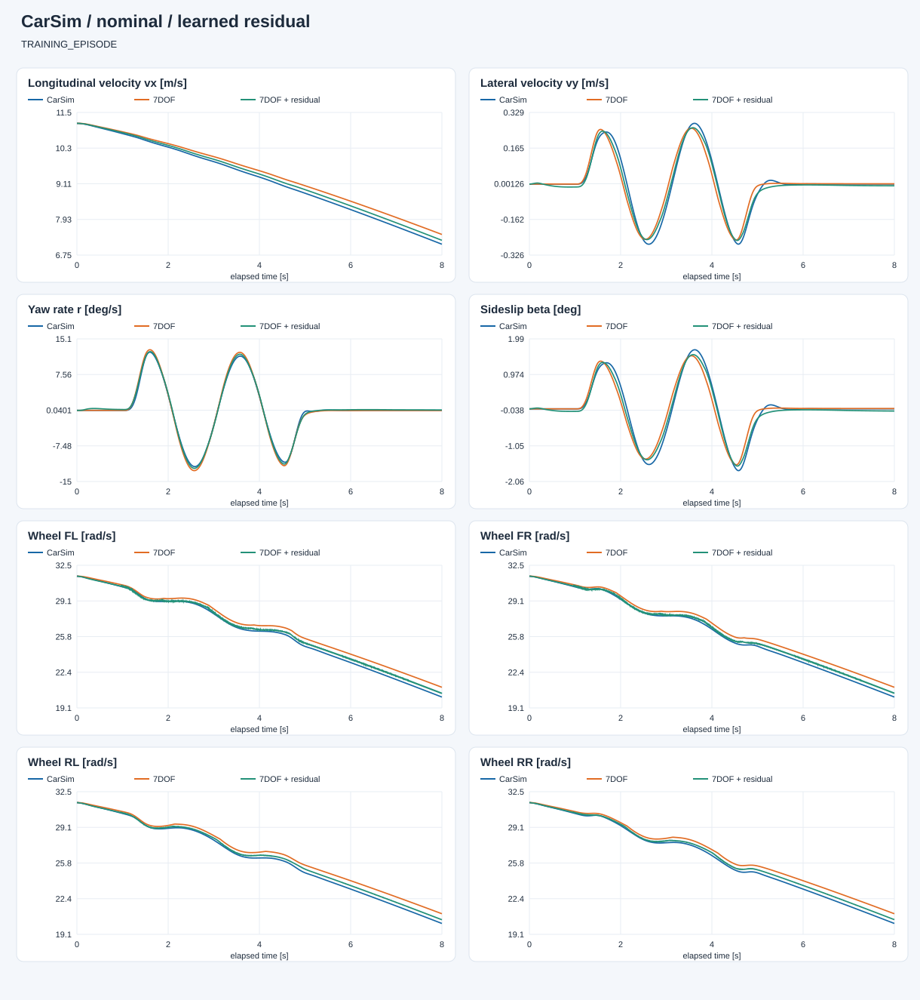
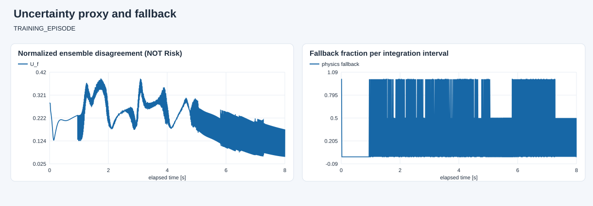

E:\modelcodeE\DRL_MPC\DRL_MPC\carsim_rl\artifacts\dynamics7dof\open_loop_20260927_233218_823895\capture
数据角色：TRAINING_EPISODE。 蓝色为 CarSim，橙色为原模型，绿色为学习补偿。两种模型都只初始化一次，不重置到真值。 共同有效覆盖率：100.0%。训练回合改善不等于泛化；只有完整留出回合才用于独立验证。 未接管控制、未生成 Risk 标签；高分歧/超范围回退只是工程防护，不是安全证明。

| 状态 | 原 7DOF | 学习补偿 |
|---|---|---|
| vx_m_s | 0.21663974308016823 | 0.09636942402764835 |
| vy_m_s | 0.03375550186978767 | 0.017023971303665453 |
| yaw_rate_rad_s | 0.0075000159632773 | 0.004575512452513222 |
| omega_fl_rad_s | 0.6005861541712672 | 0.22771477108330473 |
| omega_fr_rad_s | 0.5964523384829928 | 0.23161688944343795 |
| omega_rl_rad_s | 0.5966944094500278 | 0.2406499735333141 |
| omega_rr_rad_s | 0.5930437275594103 | 0.24431531324456204 |

完整指标见 evaluation.json。低网络分歧不保证低真实误差，尚未完成不确定性校准。